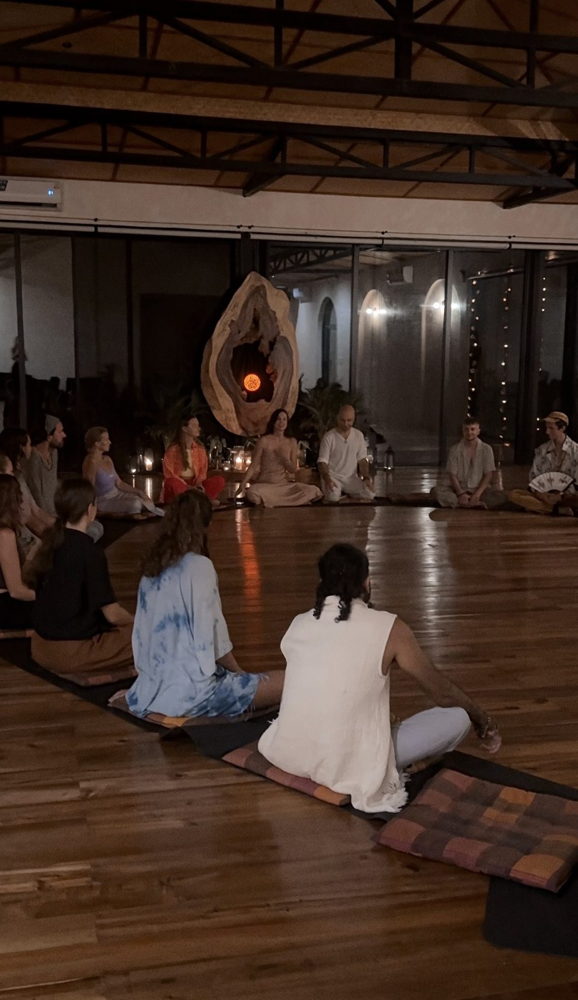

Аутентичная Глубина
12–15 женщин. Один живой звонок в неделю.
Ежедневная практика 15–20 минут.
Возможно, вы прочитали «Пять дней возвращения в тело» — и что-то откликнулось.
Возможно, вы давно слышите внутри тихий вопрос —
и не хотите оставаться с ним один на один.
Возможно, вы готовы к работе — но не к тому,
чтобы идти соло.
Круг — это пространство для тех,
кто хочет возвращаться вместе.

Что внутри
12–15 женщин. Не курс. Не вебинар. Не марафон. Малый круг, в котором разворачивается медленная, точная работа с тем, что в вас уже есть.
Каждую неделю — один живой звонок 90 минут в Zoom. Я веду практику, мы вместе молчим, делимся по желанию, отвечаем на вопросы. Это не лекция — это круг.
Каждый день — аудио-практика на 15–20 минут. Своим темпом, в своё время. Доступ к записям остаётся у вас навсегда.
Закрытый Telegram-чат группы — для вопросов между созвонами и совместного движения. Не трибуна, а тихая комната.
Бонус: одна индивидуальная сессия 30 минут лично со мной — в любой момент курса. Тихое личное «здравствуйте» посреди пути.
Не терапия. Не коучинг. Не «техника».
Глубина — в своём темпе, рядом с другими.
Восемь недель
Неделя 1 · Возвращение.
Первое касание с телом как с домом.
Базовая практика — Аутентичное дыхание.
Тишина как фундамент.
Неделя 2 · Слушание.
Микро-внимание к телу в течение дня.
Различение голоса страха от голоса знания.
Неделя 3 · Граница.
Тело как храм. Работа со «да» и «нет» —
не из ума, а из глубокой телесной правды.
Неделя 4 · Чувствование.
Эмоции как энергия, а не проблема.
Работа с замороженными чувствами через дыхание и звук.
Неделя 5 · Близость с собой.
Сольные практики Каула-линии — то, что потом естественно
переносится в отношения. Не «как лучше с партнёром»,
а «как глубже с собой».
Неделя 6 · Голос.
Голос как канал тела. Звук, дыхание в звуке, спонтанное
выражение. Возвращение себе права быть услышанной.
Неделя 7 · Преданность.
Вход в сердце. Практика как живая молитва —
без слов, через тело. Связь с тем, что больше вас.
Неделя 8 · Интеграция.
Сборка пройденного в ежедневный ритм.
Свой личный устав практики на следующие месяцы.
Кому это
В обоих случаях — я благодарю вас за честность с собой.
Если 1:1 ближе — приходите на сессию.
Инвестиция
Длительность
8 недель
Формат
Zoom
+ Telegram
Стоимость
€ 450
Мест
12–15
Оплата единовременно или 2 частями (€230 + €230 с разницей 30 дней).
Возможна оплата в USD, RUB или другой валюте — укажите в заявке.
Возврат в первые 7 дней, если работа не откликается.
Стипендия: 1–2 места по сниженной цене для женщин в финансово трудном моменте.
Заявка
Заявка занимает три минуты. Я читаю каждую лично и отвечаю в течение двух-трёх дней. Если откликается — отправляю реквизиты для оплаты и ссылку на приватную группу.
Часто спрашивают
Первая когорта стартует в течение двух-трёх недель после закрытия набора. Точная дата сообщается в ответе на вашу заявку, чтобы можно было сразу заложить в календарь восемь звонков.
Live-звонки проходят по вторникам в 19:00 МСК (17:00 в Берлине, 23:00 в Бангкоке, 11:00 в Нью-Йорке). Финальное время согласуется с когортой после набора.
Каждый звонок записывается. Запись приходит в приватную группу в течение суток. Тем не менее, прошу приходить на live, когда возможно — круг работает иначе в живом времени.
Если вы пропустите два или больше звонков — я предложу перенести в следующую когорту. Это не «наказание», просто практика такова, что живое присутствие даёт другой опыт.
Да. «Аутентичная Глубина» — закрытый женский круг из 12–15 человек. Это намеренный выбор: в женском поле возникает другая глубина, и работа с телом, голосом и границами разворачивается иначе, когда вокруг только женщины.
Для мужчин и пар будут отдельные форматы — следите за анонсами или напишите мне в личные сообщения.
Звонки и ежедневные голосовые проходят на вашем языке.
В каждой когорте — один язык. Если приходят англоязычные участницы — я собираю для них отдельную когорту со своим кругом, своими звонками и своими голосовыми на английском.
Я не смешиваю языки в одном круге — глубина практики требует, чтобы все слышали друг друга и меня без перевода.
Личный 15-минутный обмен — на любом удобном для вас языке.
Да. Круг построен так, что подходит и тому, кто только открывает практику, и тому, кто практикует давно. Все базовые техники я объясняю с нуля, а глубина приходит изнутри, не от опыта.
Нет. То, что мы делаем — это не «новые техники». Это возвращение к тому, что вы уже знаете, но не всегда живёте.
Большинство опытных практикующих, которые приходят в круги такого формата, говорят: «я вспомнила то, что давно знала, но потеряла».
Это редко происходит, но возможно. Уйти можно — я не держу никого. Возврат стоимости в этом случае не предусмотрен — потому что место уже занято, и ваше присутствие или отсутствие на звонках не меняет затрат когорты.
Если вам нужно выйти из-за форс-мажора — пишите лично, мы найдём решение.
Да. 1:1 сессия — это 75 минут только со мной, €200, более адресная разовая работа. «Аутентичная Глубина» — это восемь недель в кругу из 12–15 женщин, €450, с бонусной 30-минутной индивидуальной сессией внутри.
Кто-то начинает с 1:1 и потом приходит в поток. Кто-то наоборот. Оба пути правильные.
12–15 мест.
Восемь недель вместе.
Глубина — в своём темпе, в тихом кругу.